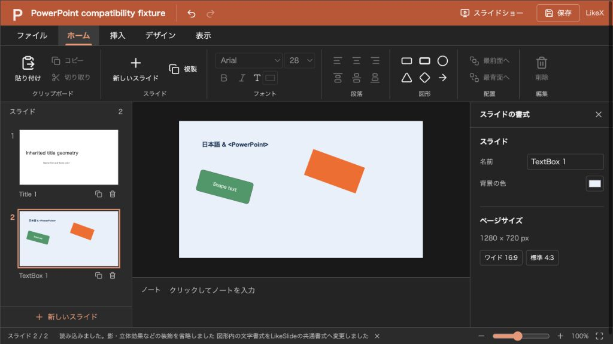

@likex/slide
PowerPoint・JSONの入出力
PPTXの読み込みと出力、アニメーション変換、対象箇所付きの診断。
画面例を見る ↓ファイルタブにPowerPoint（.pptx）とLikeSlide（.slon）の読み込み・出力をまとめています。.slon の中身は保存用の SlideFile（version 1）のJSONです。ネイティブ形式の仕様も参照してください。古い .ppt、マクロを含む形式、暗号化されたファイルには対応しません。
APIから使う#
import { importSlidePptx, exportSlidePptx } from "@likex/slide/model";
const { deck, warnings, diagnostics } = await importSlidePptx(file);
// warningsを利用側の通知へ表示できます。
const output = await exportSlidePptx(deck, {
onWarning: message => console.warn(message),
});
const bytes = new Uint8Array(await output.arrayBuffer());importSlidePptx の入力は Blob | ArrayBuffer | Uint8Array、第2引数は { signal?: AbortSignal; onDiagnostic?: (diagnostic: SlidePptxDiagnostic) => void } です。戻り値は Promise<{ deck: SlideDeck; warnings: string[]; diagnostics: readonly SlidePptxDiagnostic[] }> です。不正な構造や上限を超えるデータは例外にし、対応しない表現の主な省略・簡略化は warnings に返します。
この関数自体はJSONを返すだけで、エディターの下書きや保存先を変更しません。ファイルタブ経由では読み込みに成功した結果を下書きへ反映します。読み込みや出力だけで onSave は呼ばれません。
exportSlidePptx(deck, options?) はPPTXの Blob を返します。SlidePptxExportOptions の onWarning?: (warning: string) => void で出力時の変換による欠落を受け取ります。このコールバックは同期で呼ばれ、例外を投げると出力も失敗します。/model の公開型はDOM型のないNode.js / Workerでも扱える SlidePptxExportBlob（size、type、arrayBuffer()、text()）です。実体は通常のBlobで、Reactを読み込まずに変換できます。従来の @likex/slide の同名APIは引き続き Promise<Blob> を返します。ブラウザーでダウンロードや送信にそのまま渡す場合はこちらも利用できます。
import { exportSlidePptx } from "@likex/slide";
<LikeSlide initialDeck={deck} onSave={async current => {
const pptx = await exportSlidePptx(current);
const response = await fetch("/api/deck.pptx", { method: "PUT", body: pptx });
if (!response.ok) throw new Error("保存できませんでした");
}} />対応範囲#
| 内容 | 扱い |
|---|---|
| スライドの順序・サイズ・単色背景 | JSONに取り込み、出力。寸法は96dpi相当のピクセルに変換 |
| テキスト | 内容・改行、共通のフォント・サイズ・色・太字・斜体、左右中央揃え、上下中央配置を取り込み、出力 |
| 基本図形 | 長方形・角丸長方形・楕円・三角形・ひし形・左右矢印・直線。位置・サイズ・回転、単色の塗りと線、線幅、図形内の文字を保持 |
| 2端点の線・持続接続 | 標準 p:cxnSp と stCxn/endCxn で始点・終点・接続先を保存。水平・垂直・逆向き・回転した線も2端点へ変換 |
| 線端の矢印 | 始点・終点それぞれの none / triangle / openArrow / diamond / oval / stealth を保持。外部ファイルの装飾サイズは標準サイズへ近似して通知 |
| 埋め込み画像 | PNG・JPEG・GIF・WebP・対応する静的SVGをJSONへ埋め込み。配置枠・回転・不透明度・代替テキストを保持。SVGは元画像とPNG代替画像を出力 |
| LikeSlideの要素アニメーション | 標準PresentationMLのタイムラインとして出力。対応範囲・近似は下表を参照 |
| PPTXの要素アニメーション | 対応する時間構造と効果をSLONへ変換。未対応の効果は warnings へ通知 |
| 画面切り替え | 読み込みでは省略し、warnings へ通知 |
| 発表者ノート | 本文をテキストとして保持し、ノートとして出力 |
| レイアウト・マスター・テーマ | プレースホルダーの位置と基本書式、テーマの色・フォントを継承。対応する背景図形を共有カタログへ取り込み、各ページのlayoutIdで参照 |
文字の一部分ごとの書式は共通書式へまとめます。箇条書き・段落間隔・縦書き、図形内の細かな文字書式、図形の調整値、破線は簡略化します。未対応の図形・自由曲線は長方形へ変換し、折れ線・曲線の接続線は2端点を結ぶ直線へ近似して通知します。画像のトリミングは解除して元画像を元の配置枠へ入れ、線以外の図形・画像の反転は省略します。EMF・WMFなどの画像は取り込みません。SVGは下記の静的な対応範囲で取り込みます。
接続先の図形・画像・テキストは、元の輪郭を持つ標準 custGeom と8接続点として出力します。元の図形種別は標準guideに記録し、再読込でも図形と接続を保持します。外部ファイルは対応する既定図形の接続点番号を変換します。接続先がない・重複する・未対応の図形や接続点である場合は、端点の位置を保って接続を解除し、診断で通知します。接続線そのものに保存された文字は p:cxnSp へ出力できないため省略を通知します。線に添える文字には別のテキスト要素を使用してください。旧形式の静的な線に含まれる文字は従来どおり保持します。
グループは内側の要素も含めて省略します。表・グラフ・SmartArt・音声・動画・埋め込みファイル、影・立体効果なども保持しません。非表示のオブジェクトは省略し、非表示のスライドは表示状態で取り込みます。
マスターとレイアウトは共有カタログとして保存し、PPTX出力でもページとの参照を再構成します。PPTX／POTXからマスターだけを既存資料へ追加するには importSlidePptxMasters を使います。マスターの利用方法を参照してください。テーマ色・フォントは対応する具体値へ解決し、元のテーマ全体や未対応のXMLをそのまま保持するものではありません。
SVGとPNG代替画像#
SVGは createSlideSvgSource で検証できる静的な対応範囲を受け付けます。スクリプト・外部参照・CSS等を含むSVGはそのまま読み込まず、同梱の有効な代替画像があれば使用して診断へ通知します。代替画像も利用できない場合は省略を通知します。対応するSVGの原文・配置・代替テキストは読み込みと出力で保持します。SVG内部のパスや文字を編集可能なPowerPoint図形へ分解する機能ではありません。
出力ではSVG本体を標準のSVG画像拡張に保存し、PNG代替画像も同梱します。SVGに対応する閲覧環境ではベクターを、非対応環境ではPNGを表示します。@likex/slide のブラウザー用APIとGUIはCanvasでPNGを自動生成します。フォントは埋め込まないため、SVG内の文字の表示も閲覧環境に依存します。
DOMのない @likex/slide/model の exportSlidePptx には、ホストの rasterizeSvg を渡します。SVGを含むのに描画関数がなければエラーです。通常のPNG等しかない資料では不要です。
import { exportSlidePptx, type SlideSvgRasterizer } from "@likex/slide/model";
// renderStaticSvgは利用側が用意した描画環境です。
const rasterizeSvg: SlideSvgRasterizer = async ({ src, width, height, signal }) =>
renderStaticSvg({ src, width, height, signal });
const pptx = await exportSlidePptx(deck, { rasterizeSvg });SlideSvgRasterizeRequest は検証済みの src、元SVG寸法を整数へ切り上げた width/height、任意の signal を持ちます。返り値は実際のPNGの OfficePackageBlob またはPromiseです。署名、指定寸法との一致、10 MiB以内のサイズを検証し、変換失敗やキャンセルではPPTXを返しません。透明なダミー画像で代替して成功とは扱いません。元SVGとPNG代替画像はPPTXの容量上限にも含まれます。SVG素材の作成
アニメーションの変換#
アニメーション付きの資料は、初期状態の要素と p:timing を出力します。独自JSONを埋め込んで再生を代用する方式ではなく、標準PresentationMLのアニメーションへ変換します。GUIのファイルタブ、refの exportPptx()、画面なしの exportSlidePptx() は同じ処理を使います。
| SLONの指定 | PPTXへの出力 |
|---|---|
| 横・縦位置、幅・高さ、回転 | 図形を対象とする数値アニメーション。スライド寸法に対する比率・中心座標へ変換 |
| 塗り・線・文字のRGB色 | 色のアニメーション |
| 不透明度 | 有限の中間値を使う段階的な変化へ近似し、警告 |
linear、ease-in、ease-out、ease-in-out | 速度指定へ変換 |
spring、bounce | 中間値を使うキーフレームへ近似し、警告 |
sequence、parallel | 実行時刻へ展開して順序と同時実行を保持。元のグループ構造とは一致しない場合あり |
| 即時・時間差・クリック | 開始条件へ変換。要素クリックでは該当図形を対象にする |
repeat、yoyo | 有限の繰り返し・往復へ変換 |
| 文字サイズ・線幅の動的な変更 | 編集可能な図形の段階的な切り替えへ近似し、警告 |
アルファ値を含む色・transparent のアニメーション | 色と透明度を保持した図形の段階的な切り替えへ近似し、警告 |
独立した timelineId | 主系列と独立系列を標準タイムラインへ出力 |
不透明度を動かす要素や、半透明のまま色を動かす要素は、PPTXの図形本体に元の不透明度を焼き込まず、スライドショー開始時のタイムラインで設定します。これにより、透明度の二重乗算や色変更による透明度の消失を防ぎます。このため、PowerPointの編集画面ではスライドショーの初期状態と見え方が異なる場合があります。従来の文字列通知 onWarning は同じ文言をまとめます。onDiagnostic ではページ・要素・プロパティごとの詳細を受け取れます。
ばね・バウンドは片道を32分割して近似します。不透明度も最大33点の値へ変換し、短い動きでは同じ時刻の点をまとめます。これは1区間の補間品質で、資料全体の動作数の上限ではありません。小数ミリ秒は整数に丸めます。位置とサイズを異なる速度で同時に変える場合も、中心座標の曲線を近似するため警告します。
読み込みでは標準XMLを解析し、再生できる効果をSLONのステップへ変換します。未対応の効果・任意の数式・複雑な移動パス・文字の一部分だけを対象とする効果・無限反復は警告し、省略します。PowerPoint上で変更した内容を古い独自JSONで上書きすることはありません。SLON固有のIDやステップ名、元のノード構造の完全な往復は保証しません。編集原本には引き続きSLONを使ってください。
主系列と独立したクリック系列をそれぞれ読み込み、timelineId で区別します。未対応のプロパティや競合する動作は個別に省略し、同じステップ内の対応する動きを残します。開始・終了を決められる省略動作は、他の動作と競合せず表現できる場合に待ち時間を残します。保持できない待ち時間も診断で通知するため、その場合は後続の開始時刻が元の資料と異なることがあります。値が変わらない点や線形に冗長な点は、結果を変えずに統合します。キーフレーム・反復・表示切り替えは、件数を理由に間引いたり静止状態へ変更したりしません。
他の動作の開始・終了を参照する条件は省略し、複数のOR開始条件は先頭へ近似します。解決できない参照の時刻は推測しません。タイミングIDが重複するなど安全に解釈できない構造は警告して省略します。ファイル全体のXML構造・展開量の検証は引き続き適用します。
文字サイズ・線幅・透明色の近似#
これらは静止図形を複数用意し、標準の表示・非表示を切り替えて再生します。1区間を32分割し、同じ見た目の図形は再利用します。追加図形数を理由に補間品質を下げる処理はありません。ただし、生成した図形を含めて1ページ1,000個・資料全体10,000個、文字数、PPTXサイズなどのファイル全体の制約は適用します。制約を超える場合は、動きを削って成功扱いにせず出力を失敗させます。
PPTXの編集画面や再読み込みでは、近似に使った複数の図形が現れます。SLONの1要素へ自動でまとめ直す処理はありません。同じ系列の不透明度は図形の切り替えへ統合します。別系列の不透明度は各図形を動かして出力しますが、表示切り替えとの合成は読み込み時に省略するため、往復で同じ動作にはなりません。
同じ要素の文字サイズと透明色などを別々の独立系列で変える場合、図形の切り替えを安全に合成できないため、該当するスタイルの動きを省略して元の値を残します。位置と幅（または縦位置と高さ）を別系列で動かす場合は、位置側の中心座標指定を優先し、サイズ変更側の中心補正を省略します。サイズ自体は動きますが端の位置がずれる可能性があり、診断で通知します。
近似図形をクリック対象にすると出力側は各図形のクリックを候補にします。再読み込み側は複数の開始条件の先頭のみを扱うため、この場合も診断を確認してください。近似を含む資料の編集原本にはSLONを使います。
出力自体もPPTX全体32MiB・1項目16MiB・4,096項目の上限を適用し、超過時はファイルを返さずエラーにします。
静止したPPTXが必要な場合は exportSlidePptx(getDeck(deck)) とします。通常のgetは全アニメーション終了後の静止値を返すため、タイムラインを出力しません。アニメーションを含める場合は元の deck または getDeck(deck, { includeAnimations: true }) を渡します。
warnings は主な省略・簡略化の通知であり、完全な互換性の判定ではありません。文字枠の余白・自動調整・改行位置や、フォント・画像の表示はPowerPointのバージョンや表示先環境でも変わります。元のPPTXを再現できる情報をすべて保持するわけではないため、必要なら元ファイルを親側で別に保管してください。
件数と処理量#
アニメーション専用のノード数・深さ・再生時間・反復回数・クリック履歴数に、製品上の固定上限はありません。時間は有限値、反復回数は正の安全な整数が必要で、積算による数値のオーバーフローも拒否します。Office標準で表せる値の範囲と、以下のファイル全体の上限は別の制約です。
変換処理は区切りごとに実行を譲ります。読み込み・出力はどちらも signal で中止できます。途中で中止したときは完全な資料やPPTXを返しません。巨大なデータを一定時間・メモリで処理する保証ではありません。
const controller = new AbortController();
const output = exportSlidePptx(deck, { signal: controller.signal });
// 中止ボタンなどから controller.abort() を呼べます。
const pptx = await output;変換結果を確認する#
GUIでは下部の「変換結果 (件数)」から右側の一覧を開きます。ページごとに、近似・省略・調整した要素とプロパティを表示します。「対象を選択」で該当するページや要素へ移動できます。通知を閉じても、最後に成功したPPTX変換の結果はこの一覧から確認できます。
import { importSlidePptx, exportSlidePptx,
type SlidePptxDiagnostic } from "@likex/slide/model";
const imported = await importSlidePptx(file, {
onDiagnostic: item => console.info(item.slideIndex, item.elementId, item.message),
});
const report: SlidePptxDiagnostic[] = [];
const pptx = await exportSlidePptx(imported.deck, {
onDiagnostic: item => report.push(item),
});
// imported.diagnostics / reportを自分の画面にも表示できます。| フィールド | 意味 |
|---|---|
phase / severity | import または export / 現在は warning |
code | unsupported-animation、animation-approximated、animation-limit、animation-conflict、unsupported-content、content-approximated、appearance-adjusted |
action | approximation（近似）、omission（省略）、adjustment（調整） |
message | 表示用の説明。分岐には文言ではなくcode/actionを使用 |
slideIndex / slideId / slideName | 0始まりのページ番号とモデル上のページID・名前 |
elementId / elementName | モデル上の対象要素 |
animationId / timelineId | SLONのステップ・独立系列のID |
timingId / sourcePart | 読み込み元のPPTXタイミングID・ZIP内のファイル名 |
property | 該当するプロパティ。読み込みではPPTX名、出力ではSLON名になる場合あり |
位置情報は判定できる項目だけが付きます。資料全体への警告などでは省略されます。同じ文言でも対象が違えば別の診断として返します。
読み込みの onDiagnostic は資料の検証に成功してから呼びます。出力の onDiagnostic と onWarning は変換中に呼ぶため、後続のエラーでPPTXを返せない場合もあります。いずれも同期コールバックで、例外を投げると変換のPromiseがrejectします。
表示中のコンポーネントでは ref.current.getPptxDiagnostics() で最後に成功したPPTX変換の診断を取得できます。初回は空配列です。onEvent の { type: "conversion", phase, warnings, diagnostics } でも取得でき、PPTX読み込みの import イベントにも diagnostics が付きます。これらの通知は保存処理を実行しません。
読み込みの上限#
| 対象 | 上限 |
|---|---|
| 入力ファイル | 32 MiB |
| ZIP内の項目数 | 4,096 |
| ZIPの展開量 | 1項目16 MiB、合計64 MiB |
| XML | 1ファイル16 MiB、深さ64、ノード数600,000 |
| スライド数 | 500 |
| オブジェクト数 | 1スライド1,000、全体10,000。継承した要素も対象 |
| テキスト | 本文・ノートはそれぞれ100,000文字、名前などを含む全体で2,000,000文字。タイトルや名前には別途1,000文字の上限 |
| 画像 | 1枚10 MiB、全体50 MiB。縦横それぞれ16,384ピクセル以内、40,000,000画素以内 |
MiBは1,048,576バイトです。同じ画像を複数配置した場合も、JSONモデルの画像合計には配置数分を数えます。ZIPの上限とモデルの上限はそれぞれ適用します。出力したPPTXも、再読込には入力ファイルの上限が適用されます。
外部リンクや外部画像を取得する通信は行いません。ZIP内の全項目の展開量・CRC・パスを検証し、暗号化ZIP・ZIP64・重複した項目や不正な参照を拒否します。XMLのDTD・外部実体を拒否し、埋め込み画像の形式・ヘッダー・寸法も検証します。
画面例

